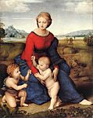
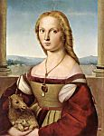
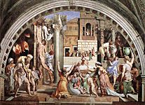
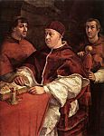

Рафаэль
Щёлкните на изображение, чтобы его увеличить
1 
2 
3 
4 
5 
6 
7 
8 
9 
10 
11 
12 
13 
14 
15 
16 
17 
18 
19 
Рафаэлло Санцио, или Санти, известный как Рафаэль
(1483, Урбино – 1520, Рим)

Введение
Перемещения художника по центральной Италии традиционно делят его непродолжительную, но блестящую карьеру живописца на три отрезка все возрастающей важности: период Умбриа-Марче (1500-1504), флорентийский период (1504-1508) и римский период (после 1508 года).
Умбрия-Марче
В Урбино Рафаэль начал учиться ремеслу живописца у своего отца, Джованни Санти, но, несомненно, куда большему он научился при дворе герцога. Позже он закончил своё обучение в Перудже у Перуджино (Perugino), который привил ему широту взглядов , унаследованную им от Пьеро делла Франческо (Piero della Francesca). В этот период (примерно между 1500 и 1504 годом) произведения Рафаэля пропитаны стилистикой Перуджино, а иногда Пинтуриккио (Pinturicchio) (1454–1513), с его вниманием к человеческой личности и стремлением к простоте, которое никоим образом не противоречило изяществу исполнения. Алтарный образ для церкви «Сан Франческо аль Монте» (San Francesco al Monte) в Перудже (1502-1503, Художественная Галерея Ватикана) представляет «Коронование Мадонны» (1) как двухъярусную композицию, где разнообразие поз и выражений лиц свидетельствует о более личном подходе. Написанное в 1504 году для церкви Сан Францеско де Читта ди Кастелло (San Francesco de Citta di Castello), «Обручение Марии» (2) (Художественная галерея Брера, Милан) более изящно повторяет демонстрацию пространственной геометрии, которую успешно применил Перуджино во «Вручении ключей святому Петру» (The Giving of the Keys) в Сикстинской Капелле.
Флоренция
Переезд
во Флоренцию, где он провел четыре года, открыл молодому провинциальному
мастеру новые горизонты. Он не смог игнорировать ни традиций кватроченто, ни одновременного
присутствия в городе Леонардо да Винчи
и Микеланджело. Монументальные композиции Фра Бартоломео (1472-1517) также расширили его кругозор. Произведения
флорентийского периода подвержены всем этим различным влияниям, однако демонстрируют
все углубляющийся гуманизм, источником которого было персональное видение
художника.
Влиянием флорентийской культуры пропитаны небольшие произведения отменного
мастерства: «Святой Михаил» и «Святой Георгий» (музей
Лувра); «Святой Георгий» (Национальная галерея, Вашингтон); диптих,
изначально состоявший из «Сна рыцаря» (Dream of the Knight)
(Национальная галерея, Лондон) и «Трёх Граций» (Three
Graces) (3) (Музей Конде,
Шантили). Однако свое пребывание во
Флоренции Рафаэль посвятил преимущественно изображениям Мадонны, придавая им
неповторимый оттенок женственности и нежности. Иногда он изображал её наедине
с младенцем, иногда в окружении других
персонажей, часто на фоне ярко освещенного безмятежного пейзажа в умбрийской традиции. Самые известные флорентийские Мадонны
Рафаэля: «Мадонна Грандука» (Grand
Duke’s) (4) (галерея Питти,
Флоренция), и «Мадонна дома Орлеан» (of the House of
Orleans) (музей Конде),
«Мадонна в зелени» (5) (The Madonna
in the Meadow) (музей Кунстисторишес,
Вена) (Kunsthistorisches Museum,
Vienna), пирамидальная структура которой навеяна
«Святой Анной» Леонардо. То же влияние прослеживается и в «Мадонне со
щеглёнком» (6) (Madonna with
the goldfinch) (галерея Уфицци, Флоренция) (Uffizi Gallery, Florence) и
«Прекрасной садовнице» (The Beautiful
Gardener) (Лувр). По этой же схеме построены более
масштабные, но не менее четкие композиции «святой беседы»: запрестольный образ
«Мадонна Колонна» (Colonna) (музей Метрополитэн, Нью-Йорк), образ «Мадонна Ансидеи» (Ansidei) (Национальная
галерея, Лондон), «Мадонна под балдахином» (The Madonna with baldachin) (дворец Питти). «Погребение Христа» (The Entombment) (7) (Галерея Боргезе,
Рим (Borghese Gallery, Rome) – основной сюжет алтарного образа «Бальони» (Baglioni),
выполненного в 1507 году для цекви Сан Франческа в Перудже. В качестве исключения, здесь мы
сталкиваемся с напряжённым стилем, с визуальными поисками, навеянными
Микеланджело. С другой стороны, «Величие Святой
Троицы» (The Glory of the Trinity)
– фреска, написанная в часовне Сан Северо (San Severo), Перуджа - демонстрирует всеобъемлющее спокойствие, которое
затем воплотится в «Торжестве евхаристии» (to The Triumph of
the Eucharist). Наконец,
к флорентийскому периоду относятся некоторые прекрасные портреты, в которых
очевидно влияние Леонардо: «Донна Гравида» (Donna Gravida) (дворец Питти), «Агноло Дони» (Agnolo Doni) (8) и «Маддалена Дони» (Maddalena Doni) (Дворец Питти) на фоне
пейзажа, а так же «Дама с единорогом» (9) (Lady with Unicorn) (Галерея Боргезе).
Рим: заказы папы
В
Риме, куда он прибыл в 1508 году, творчество Рафаэля достигло расцвета.
Воодушевленный и воспитанный на открытиях
античного наследия и примере Браманте и
Микеланджело, он вскоре предстаёт как
художник, способный лучше всех переводить грандиозные задумки пап-гуманистов
эпохи Возрождения на общедоступный язык; прежде всего – Юлия II, который
грезил о воскрешении Римской империи под духовной, гражданской и культурной
властью церкви.
В Ватиканском дворце группа художников из Сьенны и Умбрии только что
начала работу над апартаментами, расположенными над покоями Александра Борджия VI. В 1508 году Юлий II решает заменить
их на Рафаэля, которого Браманте представил ко
двору понтифика. Именно так появились на свет так называемые «станцы» или «комнаты» Ватикана, наиболее известный цикл
фресок этого художника, а по большому счёту, и его мастерской.
Станца делла Сеньятура (of the Signature) была расписана в
период с 1509 по 1511 год; практически всё сделал сам Рафаэль. Этот ансамбль,
где его искусство достигает точки равновесия и во всем следует
величественному вдохновению художника, воплощает одну из величайших целей
гуманизма – примирение языческой культуры с христианскими идеалами. Среди
гротесков, уже выполненных к тому времени Содомой (Sodoma) (1477-1549), четыре медальона на своде представляют
персонажей, олицетворяющих теологию, философию, поэзию и правосудие, к
которым относятся сюжеты, изображённые рядом: «Первородный грех», «Астрономия»,
«Аполлон и Марсий», «Суд Соломонов». Сюжет из
четырёх частей выполнен в виде огромных фресок на стенах с арочными
завершениями. Здесь аллегории отступают перед живыми
образами. Иллюстрирующее теологию «Торжество евхаристии» (10) (широко
известное под весьма неточным названием «Диспут о таинстве причастия») сочетает
земную область, представленную воинствующей церковью (отцы церкви, священники
и верующие), и область небесную – область торжествующей церкви (пророки,
апостолы и святые), в вогнутом пространстве, где все персонажи тяготеют
к расположенной в центре дароносице. Философию прославляет «Афинская школа», где
персонажи – философы и учёные – наполняют величественную перспективу храма,
навеянную Браманте. Поэзию представляет не менее
ясная композиция «Парнаса», где античные и современные поэты сопровождают Аполлона
и муз. Наконец, правосудие представлено в двух сюжетах:
«Григорий IX передает на хранение Декреталии» (Gregory
IX Approving the Decretals) и «Трибониан вручает
Пандекты императору Юстиниану» (Tribonian Consigns the Pandects to Emperor
Justinian). Их разделяло окно
и они были увенчаны аллегорическим изображением добродетелей.
Расписанная в период с 1511 по 1514 год, станца д’Элидоро (Heliodorus) свидетельствует об определенной эволюции.
Менее идеализированные, более исторически выдержанные, и даже содержащие
некоторые намёки на политику понтифика, сюжеты росписей отражали охраняющее
церковь божественное вмешательство. Медальоны на своде изображали четыре
эпизода из Ветхого завета. В известном смысле, набор изобразительных средств
расширился: в «Изгнании Гелиодора из храма» (11) (Expulsion of Heliodorus from the Temple) (достойно упоминания
присутствие здесь Юлия II) на первый
план выходит движение; контраст света и тени проявляется в ночной версии
«Освобождения святого Петра» (Deliverance of St Peter);
реализм проникает на «Мессу в Больсене» (Mass at Bolsena)
через портреты папских придворных и щедрое использование цвета явно под венецианским
влиянием; новая форма композиции, использующая неравные массы, оживляет
«Встречу Святого Льва и Атиллы» (St Leo halting
Attila), на которой Лев X изображён святым.
Уже заметное в комнате Гелиодора присутствие работ,
выполненных помощниками Рафаэля, становится значительным в станце, известной как «Пожар в Борго»,
расписанной для Льва X в период с 1514 по 1517 год, на тему, в которой
история и действительность заняли еще большее место. Четыре основных сюжета
показывали пап по имени Лев в действии. То изображение, в честь которого была
названа комната, «Лев IV останавливает пожар в Борго
святым распятием» (12), является наиболее запоминающимся, благодаря глубине композиции,
исторической точности, пластичности форм, некоторые из которых, похоже, были
выполнены рукой самого Рафаэля.
В станце Константина мастеру принадлежит лишь общая
концепция; исполнили же её целиком его ученики, например, Джулио
Романо (Giulio Romano),
которому приписывают буйную, грандиозную фреску, изображающую «Битву на Мильвиевом мосту» (Battle of Milvius Bridge),
известную также как «Победа Константина над Максенцием»
(Victory of Constantine over Maxentius).
Нет никаких сомнений в том, что именно в1514 году Лев X заказал Рафаэлю ещё
один грандиозный ансамбль: картоны для десяти гобеленов, изображающих «Деяния
апостолов» (Acts of the Apostles), для Сикстинской
капеллы. Гобелены были вытканы в Брюсселе и выставлены сейчас в Художественной Галерее Ватикана. Семь из
этих картонов дожили до наших дней (Музей Виктории и Альберта, Лондон). Основная заслуга этих широкомасштабных композиций (в
частности, «Чудесного улова» (Miraculous Draught of Fishes),
похоже, написанного, мастером лично) заключается в классической простоте и
эффектности постановки, оставляющей ключевую роль персонажам.
С 1518 года до самой смерти Рафаэль руководил процессом создания Лоджий в
Ватикане. Это была галерея из тринадцати лавров, украшенная утонченными орнаментами,
выполненными в виде сочетания живописных гротесков и гипсовой лепки, в
частности рукой Джованни да Ундине (1487-1564). Сами помещения были расписаны небольшими
фресковым композициям (по четыре на каждый лавр), в живой манере
иллюстрирующими эпизоды из Ветхого Завета. Эта знаменитая библия была задумана самим Рафаэлем, на что указывают
некоторые рисунки; однако выполнили её Джулио
Романо, Полидоро да Караваджо (1500-1546), Перин Дель Вага (1501-1547), Джованфранческо
Пенни (1488-1530) и другие.
Рим: другие работы
Работы
в Ватикане, не отнимали у Рафаэля всей его чудесной энергии; он также украшал
фресками различные римские здания. В церкви Святого Агостино
(1511) был изображён пророк Исаия между двумя пути. Эта фреска напоминает пророков
Микеланджело. Заказы банкира Агостино Киджи (Agostino Chigi) заслуживают особого внимания. На первом этаже
своей виллы, позже названной «Ла Фарнесина» (La Farnesina), Рафаэль в 1515 году написал фреску «Триумф
Галатеи» (Triumph of Galatea) (13), мягкую композицию, насыщенную нежным
гуманизмом. И вновь пластика Микеланджело повлияла изображение четырёх сивилл,
ангелов и путти, венчающих арку в церкви Санта
Мария делла Паче (1514). В
Санта Мария дель Пополо,
в капелле Киджи, архитектура которой принадлежит
Рафаэлю, также присутствуют несколько мозаик, выполненных по его наброскам
(1516). Наконец, в 1517 году мастера попросили украсить фресками лоджию виллы
Киджи. И хотя на самом деле не он выполнил их, основная
оригинальная идея принадлежат без сомнения ему, о чём говорят несколько
замечательных набросков. Помещение представляет собой беседку с гирляндами из
цветов и фруктов; история Психеи занимает центральную часть свода и его
десяти стрел.
Серия римских Мадонн продолжает традиции Мадонн флорентийского периода в
более зрелом, и даже мрачном стиле. Мадонна, известная как «Мадонна Альба» (Duke of Albe’s)
(14) (Национальная Галерея, Вашингтон) выполнена в форме тондо,
как и знаменитая «Мадонна на стуле» (Madonna of the chair)
(Дворец Питти). «Мадонна с голубой диадемой» (Лувр)
также выполнена в камерном формате, тогда как большие композиции отличают «Мадонну
Фолиньо» (Художественная галерея Ватикана), «Мадонну
с рыбой» (Музей Прадо, Мадрид), и «Сикстинскую Мадонну» (15) (Гемельдегалери, Дрезден). Последняя, происходящая из церкви Сан Систо
(Пьяченца), - самая таинственная из-за своей
воздушной композиции. Прочие религиозные изображения, датированные римским
периодом: «Видение Иезекииля» (The
Vision of Ezekiel) (Дворец Питти)
монументально эффектное, несмотря на малый формат; «Святая Цецилия» (Художественная галерея Болонии),
исполненная музыкальной безмятежности; и, наконец, знаменитое «Преображение»
(Transfiguration) (16) (Художественная галерея
Ватикана) в двух регистрах, нижний из которых выдает руку учеников.
несмотря на поразительную загруженность, Рафаэль пишет
в Риме несколько портретов, чьё совершенство может соперничать лишь с их
простотой: «Кардинал» (Прадо, Мадрид), «Бальдассар Кастильоне» (17) (Лувр), «Федра Ингирами»
(Дворец Питти), «Дама с вуалью» (Дворец Питти), «предположительно Биндо
Альтовити» (Национальная галерея Вашингтона), «Лев
X с двумя кардиналами».
Мир Рафаэля
Своим удивительным успехом Рафаэль во все три периода своего творчества обязан прежде всего своей изумительной способности переводить сложные концепции на доступный язык, понятный каждому, язык форм, наполненных глубокой человечностью. И здесь пример Мадонн очень важен. Акцент может быть сделан на счастливом материнстве («Прекрасная садовница», «Мадонна на стуле») или на важности миссии («Сикстинская Мадонна»); однако, в них всегда присутствует живой женский образ, соединяющий изящество и благородство. Великие римские циклы позволили Рафаэлю более полно показать свою изобретательность. Конечно, программа этих произведений не принадлежит ему одному, как это было в случае со «Станца дель Синьятуре», где гуманизм принимает вызов неоплатонизма. Идеи папы сыграли здесь свою роль, однако именно их интерпретация Рафаэлем позволила нам понять их. Задача художника заключалось не просто в изображении аллегорических образов, (необходимых, однако, для раскрытия темы), а, скорее, в развитии их значимости в сюжетах, каждый из которых рассказывает о странствиях человеческого духа. Очевидно, что композиция здесь особенно важна. Сама по себе она выражает идею духовного порядка путём поддержания равновесия масс, полного равновесия изображаемых сил, установления точного места для каждого предмета и гибкости основных линий. Эта композиция организует пространство, расширенное перспективой, так, что отдельные фигуры в нем не так важны, как их расположение в определенном порядке. Всё это черты классицизма, однако гений Рафаэля достаточно велик, чтобы включать в себя и совершенно противоположные тенденции. «Станца д’Элиодоро» является тому доказательством: здесь обозначен интерес к движению, к ночному освещению, иными словами, к случайному и к той индивидуальной истине, которую так проникновенно изобразил художник в восхитительных портретах, написанных во Флоренции и Риме.
Рука Рафаэля
Необходимо отказаться от довольно распространённого взгляда, согласно которому заслуга Рафаэля кроется в концепции и, возможно, в композиции, но едва ли в исполнении, что делает его, по словам Бернара Беренсона, лишь блестящим «иллюстратором». Рафаэль ещё и великий живописец. Действительно, некоторого рода скромность практически всегда заставляла его скрывать свое мастерство и знания под маской простоты. Справедливо также, что, будучи управляющим проектами огромного масштаба, ему часто приходилось передавать исполнение своих замыслов частично или целиком, своим ученикам или коллегам, и что в результате определить степень его участия в работах представляется делом весьма трудным. Существует, однако, ряд картин выдающегося качества, единодушно приписываемых руке мастера. Искусство рисунка, которое мы видим в многочисленных эскизах художника, которые хранятся в знаменитых коллекциях по всему миру, позволяет увидеть, как из взаимодействия линий рождается чуткость форм. Цвет, в основном сдержанный и являющийся лишь дополнением к форме, иногда становится богаче, как, например, в «Мессе в Больсене» (19). Искусство живописи, светлое и трепещущее в лучших работах, отличается виртуозностью, не выставляющей себя на показ.
Художник и его наследие
Популярность
работ Рафаэля еще более возросла благодаря гравюрам Маркантонио
Раймонди (1480-1534), современника мастера. Сильный
разнобой стилей привнесли многочисленные
ученики и помощники Рафаэля (среди которых Джулио
Романо был, похоже, самым близким). То, как они использовали язык мастера,
чаще всего приводило к созданию произведений в стиле маньеризма. Истинным
наследником Рафаэля скорее должен считаться Ле Сёр
(Le Sueur) французский
живописец XVII века.
Долгое время и с негативным оттенком, работы Рафаэля рассматривались как
некий манифест классицизма. Здесь кроется, вероятно, основная причина отрицания
его творчества, частого для середины XIX века и выраженного, в
частности, бунтом прерафаэлитов. Не смотря на это, даже сегодня, произведения Рафаэля могут
удовлетворить эстетический вкус, ищущий чего-то нового и неожиданного.
Внимательный взгляд сможет проникнуть
сквозь покров простоты и оценить вечную молодость и возвышенность его идей.
Рафаэль архитектор
Архитектурные работы Рафаэля заслуживают места среди тех шедевров, которые определили дух классического Ренессанса. Большинство из них находится в Риме. Церковь Сант’Элигио дельи Орефечи (The Sant'Eligio degli Orefeci), датируется примерно 1513 годом. В 1514 году Рафаэля назначают управляющим работами в Ватиканской базилике (до него им был Браманте); он принял план, в котором греческий крест был заменен на латинский, но этот план не был осуществлен. С другой стороны, планы Браманте для собора Святого Петра вдохновляли Рафаэля при возведении капеллы Киджи в Санта Мария дель Пополо примерно в 1515 году. Лоджия Виллы Мадама (примерно 1516 год), заслуживает упоминания из-за замечательных гипсовых украшений свода.

© 2006 Umanista.Net